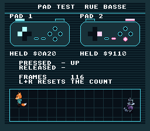

|
OpenSNES
Modern Open-Source SNES Development SDK
|
|
OpenSNES
Modern Open-Source SNES Development SDK
|
The pad test of a city terminal. Both controllers are drawn on screen, and every button held lights up on its pad's drawing, several at once; under each pad, the bitmask padHeld() returns, in hex. Under them: the last button pressed and the last button released on pad 1, and the number of VBlanks since boot. In the test bay at the bottom, each D-pad walks its own avatar: Kit for pad 1, the raccoon for pad 2. The screen the console check uses (rows 2 and 14 of docs/HARDWARE_VERIFICATION.md).

| Input | Display |
|---|---|
| Any buttons on pad 1 / pad 2 | they light up on that pad's drawing while held (cyan on pad 1, pink on pad 2), and HELD shows their bits |
| A press / a release on pad 1 | PRESSED / RELEASED name the button |
| The D-pad of pad 1 / pad 2 | walks Kit / the raccoon in the test bay |
| L and R together | the frame counter goes back to 0, once, on the frame the pair is completed |
The SNES joypad is a shift register — the hardware clocks out 16 bits of button state every frame during the auto-joypad read period (after VBlank). The NMI handler in crt0.asm captures this automatically into pad_keys[]. Your code never touches hardware registers directly.
Use padHeld for continuous actions (movement, charging). Use padPressed for one-shot actions (jump, menu select, pause toggle), and padReleased for what happens when a button comes up (release a charged shot, end a long jump early).
padHeld(1), padPressed(1) and padReleased(1) read the second pad the same way; each pad has its own state, so releasing pad 2 changes nothing on pad 1.
Multiple buttons can be held simultaneously. Test with bitwise AND:
The pads are part of the background picture. Each button has a lamp: an 8x8 sprite laid over it, shown while its bit is set and hidden otherwise:
Both pads use the same four lamp tiles (a disc, a square, a pill, half a shoulder); pad 1 draws them with OBJ palette 2 (cyan), pad 2 with palette 3 (pink). The sprites go through OAM, which the NMI handler sends every VBlank, so lighting a button costs no VRAM or CGRAM write. The avatars are 32x32 and the lamps 8x8: OBJ_SIZE8_L32, with oamSetSize(id, OBJ_LARGE) on the avatars.
| Region | Content |
|---|---|
| $0000 | the font (textModeInit(), BG1) |
| $1000 | BG2 tiles: the terminal and its two pads (2bpp) |
| $3800 | BG1 map: the text |
| $3C00 | BG2 map |
| $4000 | OBJ tiles: Kit and the raccoon in four facings, the four lamps |
res/screen.png (the terminal, the two pads, the test bay) and res/cast.png (the avatars and the lamps) are made by devtools/art_assets/build.py (pad_screen, pad_sprites); Kit and the raccoon are Néo-Lumen art (PixelLab, CC0; assets/neo-lumen/README.md). The lamps' places on a pad are PAD_LAMPS there and the lamps[] table in main.c. The build converts both from the settings file beside each (opensnes-tileset, opensnes-sprite).
| Module | Why it's here |
|---|---|
| console | consoleInit(), WaitForVBlank(), NMI handler setup |
| sprite | the lamps and the avatars (oamSet, oamHide, oamSetSize) |
| dma | the terminal's map, sent to VRAM |
| background | BG2: the terminal's tiles and map |
| text | textModeInit(), textPrintAt(), textPrintHex(), textPrintU16() |
| input | padHeld(), padPressed(), padReleased() for both pads |
| gameloop | gameLoopRun(): the init / update shape of the program |
Then open controller.sfc in luna (luna-gui controller.sfc) or any emulator, and press buttons on both pads.